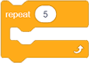
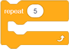

Повторение¶
Вече споменахме, че повтарянето на една или повече команди (блокове) е важна концепция в програмирането. Когато някои от командите действат няколко пъти в програма, казваме, че програмата съдържа цикъл. Използвали сме тази концепция вече няколко пъти.
В Скрач имаме 3 вида блокове, които повтарят команди:
Блокът, който повтаря команди конкретен брой пъти;
Блокът, който повтаря команди безкраен брой пъти;
Блокът, който повтаря команди докато специфично състояние не се изпълни.
Ще вкараме блоковете, които трябва да повторим, в един от тези блокове.
Блокът, който повтаря команди конкретен брой пъти¶
Използвахме блока, който повтаря команди конкретен брой пъти, в проекта Ферма (можеш да намериш повече информация в урока Външен вид).
Спрайтът пиле в програмата симулираше движението кълване чрез сменянето на костюми а, б и в 10 пъти. След тази симулация пилето увеличи размера си с 10. Нашата цел беше да увеличим размера на спрайта пиле с 50, така че повторихме част от кода, който увеличи размера на спрайта 5 пъти. За да постигнем желаното поведение, използвахме блоковете  и .
и .
Във фигурата отдолу свихме частта от текста, свързан с повторението на командите, и направихме същата програма, но този път без да използваме блоковете за повторение. Текстът, който имахме, беше наистина дълъг, така че за яснота трябваше да го разделим на 5 колони.
{kind=link}
 Създай проекта Ферма без да използваш блоковете за повторение. Сравни твоя код с нашия. Вярваме, че можеш да видиш, че натрупването на идентични групи от блокове прави програмата по-дълга, по-трудна за разбиране и подобряване.
Създай проекта Ферма без да използваш блоковете за повторение. Сравни твоя код с нашия. Вярваме, че можеш да видиш, че натрупването на идентични групи от блокове прави програмата по-дълга, по-трудна за разбиране и подобряване.
Блокът, който повтаря команди безкраен брой пъти¶

Този блок за повтаряне на команди действа безкраен брой пъти. Действието на този блок никога не спира от само себе си. Трябва да го спрем чрез кликване на бутон, който спира програмата (червеният бутон до зеления флаг), или чрез използването на един от следните блокове  / /
/ /  , от категория Control.
, от категория Control.
Използвахме блока, който повтаря команди безкраен брой пъти, в проекта Котката гони мишката (можеш да намериш повече информация в урока Движение.
Блокът, който повтаря команди, докато специфично състояние не се изпълни¶

Този блок за повторение на команди действа, докато определено състояние не е изпълнено. Текстовете в този блок се изпълняват на основата на тест, който определя дали състоянието, поставено в блока е вярно или не. Използваме този блок, когато не знаем колко пъти трябва да повторим команди в блока за повторение и, следователно, искаме те да действат, докато дадено състояние не е изпълнено.
Ще демонстрираме как блок, който повтаря команди, докато определено състояние не е изпълнено работи – ще създадем програма, която функционира като таймер, тоест, отброява секундите от въведената стойност до нула.
За тази програма ще създадем променливата , която ще съхранява стойността на оставащите секунди, докато таймерът отброява. Ще поискаме от потребителя да въведе определен брой секунди. Тогава ще започнем отброяването. След като въведеното време измине, ще чуем звуков сигнал.
Фигурата отдолу съдържа нашето предложение за кода на програмата с коментари, които служат за обяснение. Програмистите смятат за полезно оставянето на коментари по текстовете, с които обясняват какво правят дадени блокове. Коментирането прави по-лесно други програмисти да разберат и да подобрят програмите, които създаваме. Можем да добавим коментар чрез кликване с десния бутон на текста и чрез избиране на опцията Добави коментар.

Програмата Таймер може да бъде намерена на линка https://scratch.mit.edu/projects/326420353. Подобри я, като добавиш звук на тиктакане на часовник, който ще се чува, докато таймерът отброява.